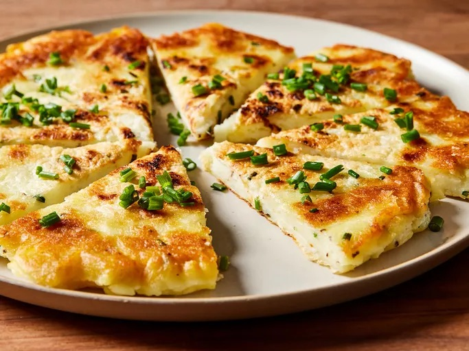

Crispy Potato Pancake
Make crispy mashed potato pancakes that stay fluffy inside in a snap with leftover mashed potatoes.
- Total Time: 25 minutes
- Prep Time: 10 minutes
- Cook Time: 15 minutes
- Serving: 4
Ingredients you'll need:
- 1 1/2 cups cold mashed potato
- 4 tablespoon potato starch or cornstarch
- 1 large egg, light beaten or whisked
- 3/4 teaspoon salt or to taste
- 1/4 teaspoon ground black pepper
- 1/4 teaspoon garlic powder
- 2 teaspoon thinly sliced fresh chives
- 1 tablespoon olive oil + 1 teaspoon olive oil
- cooking spray
Directions:
- Mix together mashed potatoes, potato starch, egg, salt, pepper, garlic powder, and 1 teaspoon of the chives in a medium bowl until combined. The mixture should be slightly sticky but not loose.
- Heat 1 tablespoon of the oil in a 10-inch nonstick skillet over medium-high heat until hot and oil is fragrant. Spoon potato mixture into skillet and press it into an even layer to create a potato pancake about 9 inches in diameter.
- Reduce heat to medium; cover skillet with a lid or flat cookie sheet and cook, giving skillet a 90-degree turn every 2 to 3 minutes, until golden brown around the edges and top of pancake feels almost dry to the touch, 8 to 9 minutes.
- Slide potato pancake onto a large plate. Spray another large plate with nonstick cooking spray and invert the potato pancake onto greased plate.
- Heat the remaining oil, then slide the pancake back into the skillet and cook, uncovered, until golden brown on the other side.
- Slide pancake onto a cutting board and garnish with remaining chives.
- Slice, serve and enjoy!
Nutrition
The table below shows the nutritional values per serving.
| Calories | 24kcal |
| Carbs | 24g |
| Protein | 5g |
| Fat | 10g |
| Sugar | 2g |